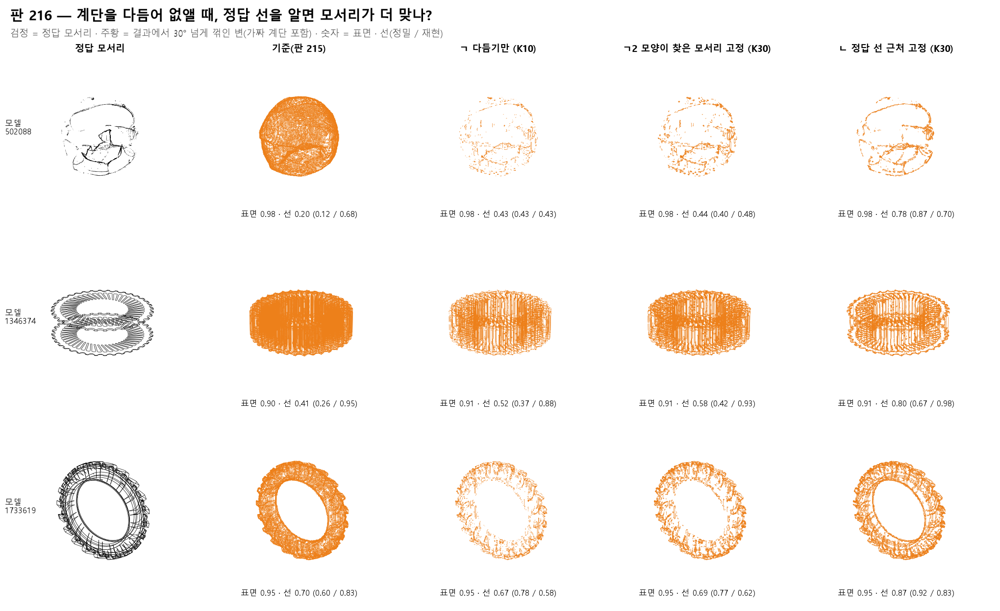

m1_tr0216_h000_계단선
128³ 계단을 다듬어 없앨 때, 정답 모서리 선을 알면 모서리가 더 맞나?
판정 · 가(선 값 있음) — ㄴ K30 선F1 0.839 대 선 없는 쪽 최선 ㄱ K10 0.516(+0.323 · p ≈ 0) · 표면 0.979 그대로 · ㄱ2 0.510 → tr217 장마다 2D 선 지도로 3D 모서리 합치기
결정 표(돌리기 전에 정함)
- 만약 ㄴ − max(ㄱ, ㄱ2) 선F1 중앙 ≥ 0.10 · 모델별 짝 Wilcoxon p < 0.05 · ㄴ 표면F1 중앙 ≥ max(ㄱ, ㄱ2) 표면 − 0.02
다음 선 출력은 값이 있음 → 장마다 선 지도를 3D 모서리로 합치는 단계(tr217 · 정답 선 지도에서) - 만약 max(ㄱ, ㄱ2) 선F1 중앙 ≥ ㄴ − 0.03
다음 선 출력 불필요 → 출력은 점(실루엣 · 깊이)만 · 합친 뒤 모양에서 모서리를 찾는 다듬기 단계를 붙임 - 만약 그 사이
다음 모델을 평면 위주 · 곡면 많음으로 갈라 어디서 선이 값 있는지부터
분석
한 줄로
물음: tr215 의 모서리 손실은 대부분 격자 계단(가짜 꺾임)이었다. 선 없이 계단만 없애면 되나, 선을 알아야 모서리를 지키나?
답: 선을 알아야 한다(결정 표 「가」). 정답 선 근처를 고정하고 다듬으면 모서리 0.84, 선 없이 다듬기만 하면 0.52 — 차이 +0.32(p ≪ 0.001), 표면은 셋 다 0.98 그대로. 선 없이 다듬으면 계단과 함께 진짜 모서리도 둥글어진다(재현 0.90 → 0.68). 모양 스스로 모서리를 찾아 지키는 쪽(ㄱ2)도 0.51 로 못 지켰다.
왜 이 판을 했나
tr215 결정 표 「나」 + 사용자 「둘 다 테스트 해보면 되잖아」 — 「계단만 없앰」 과 「선으로 세움」 을 한 판에서 가른다. 선 없는 쪽이 허수아비가 되지 않게, 모양에서 스스로 모서리를 찾아 지키는 갈래(ㄱ2)를 함께 넣고, 다듬기 횟수 K(10 · 30)는 갈래마다 가장 좋은 것으로 골랐다.
바꾼 것 하나
다듬을 때 「어느 꼭짓점을 고정하나」 만 바꿨다 — ㄱ 없음 · ㄱ2 다듬기 10 번 한 모양에서 30° 넘게 꺾인 변 · ㄴ 정답 모서리에서 한 칸(0.0086) 안. 합치기(tr213 · 9 장 · 128³) · 다듬기(타우빈) · 자(표면F_5만 · 선F_5만)는 같다.
결과

| 하드서페이스 132 · 중앙 | 표면 F@1 % | 모서리 F@1 % | 정밀 | 재현 |
|---|---|---|---|---|
| 기준(tr215) | 0.976 | 0.408 | 0.261 | 0.903 |
| ㄱ 다듬기만(K10) | 0.979 | 0.516 | 0.425 | 0.677 |
| ㄱ 다듬기만(K30) | 0.979 | 0.508 | 0.649 | 0.560 |
| ㄱ2 모양이 찾은 모서리 고정(K30) | 0.980 | 0.510 | 0.423 | 0.716 |
| ㄴ 정답 선 근처 고정(K30) | 0.979 | 0.839 | 0.798 | 0.919 |
판정: ㄴ − 선 없는 쪽 최선(ㄱ K10) = +0.323 · 모델별 짝 Wilcoxon p ≈ 0 · 표면 안 떨어짐 · 멀쩡함(ㄴ > 기준) 통과 → 가: 선 출력은 값이 있다.
왜 이렇게 나왔나
확인한 것
- 다듬기는 계단(가짜)과 모서리(진짜)를 가르지 못한다 — ㄱ 은 K 를 늘릴수록 정밀은 오르고(0.43 → 0.65) 재현은 떨어진다(0.68 → 0.56). 둘 다 「꺾임」 이기 때문.
- 모양만 보고 모서리를 고르는 것(ㄱ2)은 계단 꺾임과 진짜 꺾임을 못 가른다 — 고정한 꼭짓점 몫이 정답 쪽(ㄴ)과 비슷한데(모델 하나에서 7.8 % 대 7.2 %) 자리가 다르다.
- 선을 알면 「여기만 지켜라」 가 되어 계단은 지우고 모서리는 남는다(정밀 0.80 · 재현 0.92).
짐작 (아직 확인 안 함)
- 더 나은 「모양에서 모서리 찾기」(법선 필터 · 평면 · 원통 맞춤)라면 ㄱ2 가 따라올 수 있다 — 이번 ㄱ2 는 단순한 방식 하나다.
한계
- 천장이다: ㄴ 은 정답 3D 모서리를 그대로 썼다. 실제로는 장마다 2D 선 지도 → 3D 모서리로 합쳐야 하고, 사진에서 뽑은 선은 틀린다.
- 128³ 격자 · 9 장 정답 시점 · 정답 깊이 · 카메라를 앎.
- ㄱ2 는 모양에서 모서리를 찾는 방법 하나만 시험.
배운 것과 다음
계단을 지우면서 모서리를 지키려면 「모서리가 어디 있는지」 를 밖에서 알아야 했다 — 출력에 선(모서리)을 넣을 값이 천장에서 확인됐다(+0.32). 그래서 장마다 지도 여섯 장(점 + 선) 형태를 이어 간다.
- tr217 — 장마다 정답 2D 모서리 지도(지도5)를 3D 모서리로 합치기: 3D 정답 선 대신 9 장의 2D 선으로도 ㄴ 만큼 가나(합치기 단계의 천장).
- 그다음 사진 → 지도 여섯 장 학습(학습 · 검증 · 시험 같은 자).
판 기록
- 카드 · 코드 커밋 19364f2 · 2c5c269(YAML 형식만, 돌리기 전) · 코드 원화3d/실험_20261013/캐드부품/계단선216.py
- 모델별 out/설명/캐드부품/모델216/잼_모델별.json(git 밖) · 요약 잼.json · 그림 그림.png